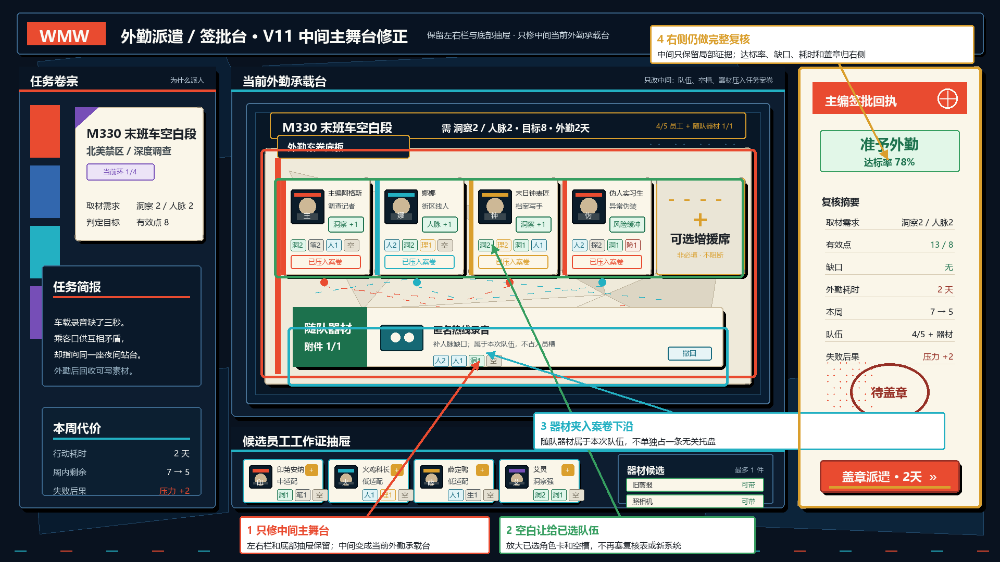
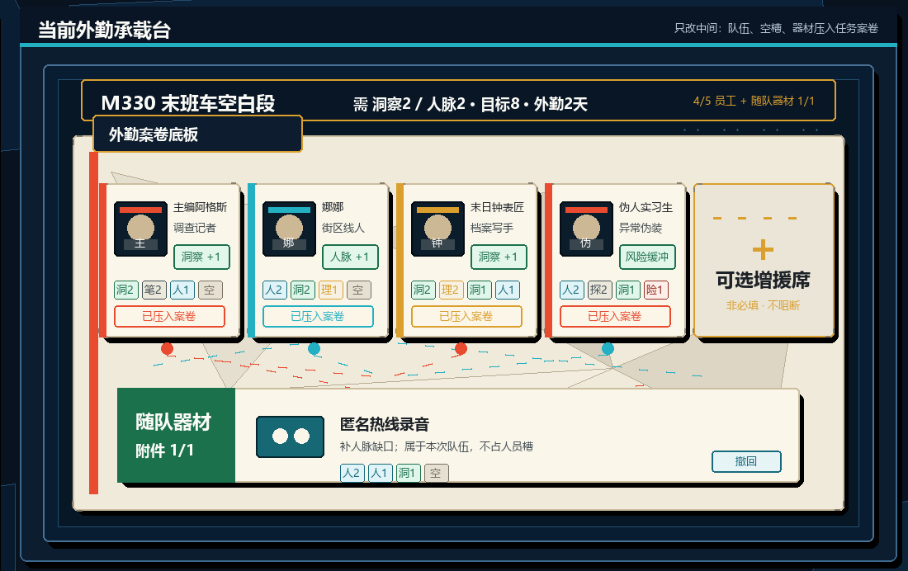

<!doctype html>
<meta charset="utf-8">
<title>Dispatch Signoff V11 Middle Stage Repair</title>
<style>
body{margin:0;background:#07101b;color:#eef;font-family:Segoe UI,Microsoft YaHei,sans-serif}
main{max-width:1500px;margin:24px auto}
img{width:100%;display:block;margin:0 0 28px;border:1px solid #345}
h1{font-size:22px}
</style>
<main>
<h1>任务派遣 / 签批外勤界面 · V11 中间主舞台修正结构稿</h1>



</main>
